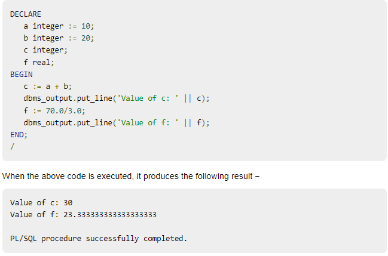

Declare variables and Initializing value to variable
~A variable is a meaningful name which facilitates a programmer to store data temporarily
during the execution of code. It helps you to manipulate data in PL/SQL programs. It is nothing except a name given to a storage area. Each variable in the PL/SQL has a specific data type which defines the size and layout of the variable's memory.
~A variable should not exceed 30 characters. Its letter optionally followed by more letters, dollar signs, numerals, underscore etc.
To declare variable:-
You must declare the PL/SQL variable in the declaration section or in a package as a global variable. After the declaration, PL/SQL allocates memory for the variable's
value and the storage location is identified by the variable name.
code:-
variable_name [CONSTANT] datatype [NOT NULL] [:= | DEFAULT initial_value]
Examples:-
~sales number(10, 2);
~pi CONSTANT double precision := 3.1415;
~name varchar2(25);
~address varchar2(100);
Initializing Variables in PL/SQL
~Whenever you declare a variable, PL/SQL assigns it a default value of NULL. If you want to initialize a variable with a
value other than the NULL value, you can do so during the declaration, using either of the following −
~The DEFAULT keyword
~The assignment operator
Examples:-
~counter binary_integer := 0;
~greetings varchar2(20) DEFAULT 'Have a Good Day';
